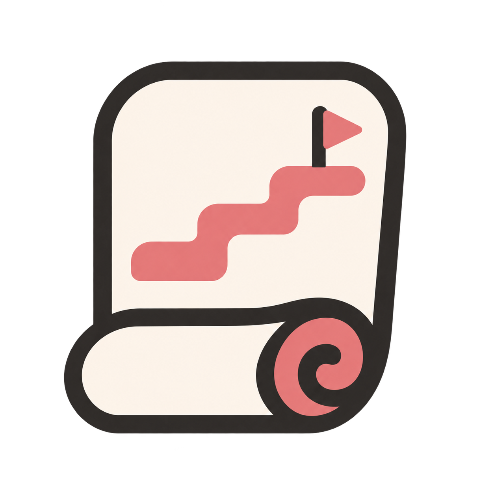
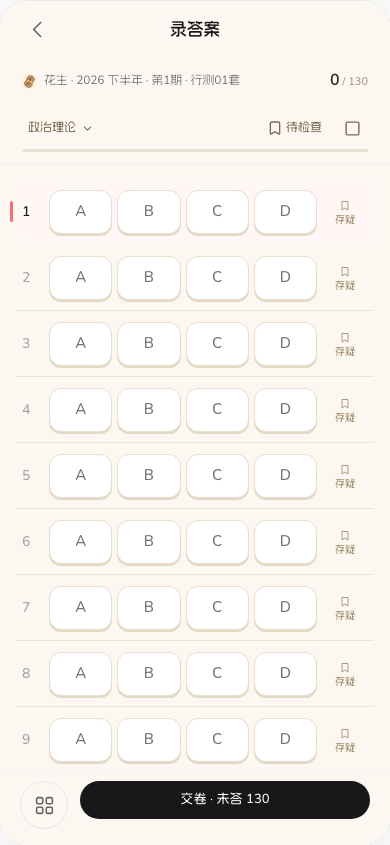

卷卷小榜
拍一张答题卡，核对答案后交卷。

扫描和后续开放的付费功能共用卷豆余额。扫描入口写「还可扫描 3 张」，用量明细可查。
| 名称 | 确认扫描时怎么写 |
|---|---|
| 卷豆 | 「本次用 1 颗卷豆」 「送 3 颗」「用 1 颗」都顺口。 |
| 卷票 | 「本次用 1 张卷票」 有纸卡感，像扫描专用券。 |
| 卷粮 | 「本次用 1 份卷粮」 像备考补给，得解释一份能用几次。 |

选套卷 → 拍照或选图 → 填入答题卡 → 核对 → 交卷
确认前显示本次用几颗卷豆。结果保存后才扣，失败会退回，重复请求只扣一次。
存疑题标「待核对」，已有草稿默认只补空题。手动录答和交卷免费。
| 方式 | 拟定规则 |
|---|---|
| 首次登录 | 每个微信账号领一份。老卷友首次绑定也领 3 颗。 |
| 邀请奖励 | 扫码注册先记邀请来源。新人在注册后 7 天内首次扫描并导入或正式交卷，邀请人领 2 颗，每月最多奖励 10 位。 微信群活动提审，小红书和抖音先发纯成绩图。 |
| 看广告 | 流量主开通后开放激励视频。看完领 1 颗，每天最多 2 颗。 |
| 购买卷豆 | 微信个人主体指南采用道具直购。通用购豆待代币充值获准后开放。 |
| 卷豆颗数 | 1 颗 | 5 颗 | 10 颗 | 30 颗 | 60 颗 |
|---|---|---|---|---|---|
| 试价 | ¥1 | ¥4 | ¥6 | ¥15 | ¥27 |
| 每颗 | ¥1.00 | ¥0.80 | ¥0.60 | ¥0.50 | ¥0.45 |
各付费功能可单独设置用几颗。赠送、奖励上限和渠道可调，现有运营积分单独记账。
首版接微信账号、卷豆余额、扫描和后台补发，实拍验证 130 / 135 题的识别和成本。
购豆和邀请各自获准后再开放，最后接广告。
先确认老卷友是否同领 3 颗，以及邀请发奖时机。 完整方案与验收